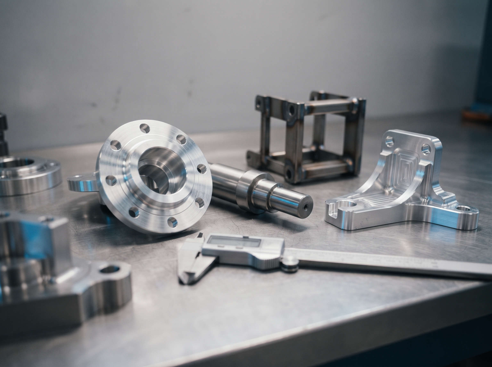

Trois apprentis rejoignent l'atelier
Un tourneur, un fraiseur et une soudeuse préparent leur diplôme en alternance chez nous.
Pièces unitaires, petites et moyennes séries : nous fabriquons d'après vos plans et livrons des pièces contrôlées.
Une pièce passe de l'usinage à la soudure puis au contrôle sans quitter l'atelier. Un seul interlocuteur suit votre commande du devis à l'expédition.

Tournage et fraisage à commande numérique sur aciers, inox, aluminium et plastiques techniques, de la pièce prototype à la série de quelques milliers.
Le détail de nos capacités
Châssis, bâtis et ensembles mécano-soudés en acier et inox, soudés par des opérateurs qualifiés puis repris en usinage si besoin.
Le détail de nos capacités
Chaque lot est contrôlé en salle de métrologie. Rapports de contrôle et certificats matière accompagnent la livraison.
Notre démarche qualitéDes donneurs d'ordre exigeants, en France et en Europe.
Supports, brides et pièces de structure en aluminium.
Ensembles mécano-soudés et pièces d'aménagement.
Pièces d'usure, axes et bâtis de machines.
Accastillage technique et pièces inox.
Pièces pour l'éolien et la maintenance industrielle.
Pièces de rechange et petites séries.
Un tourneur, un fraiseur et une soudeuse préparent leur diplôme en alternance chez nous.
Quarante élèves de 3e ont découvert nos métiers lors d'une journée portes ouvertes.

Envoyez-nous votre plan et vos quantités : nous répondons sous 48 heures ouvrées.
Nous contacter